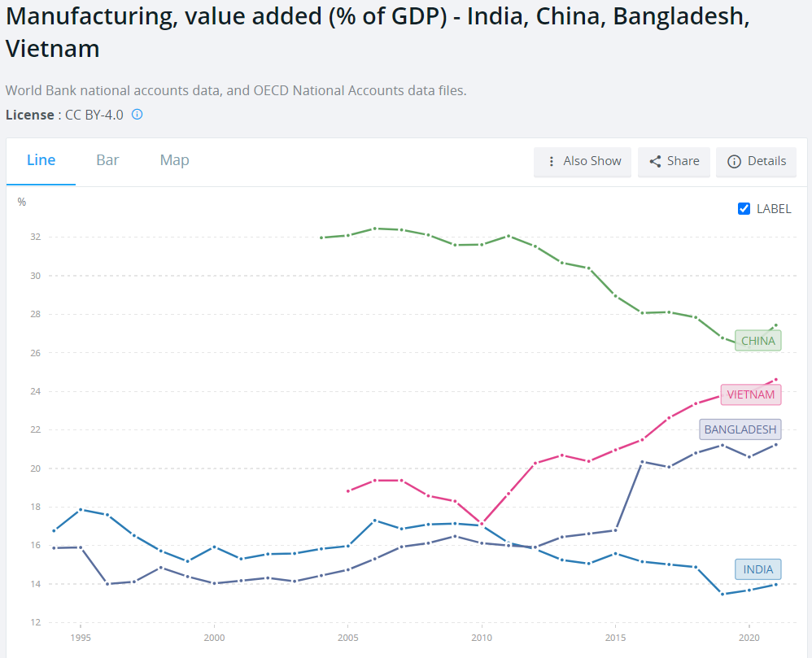
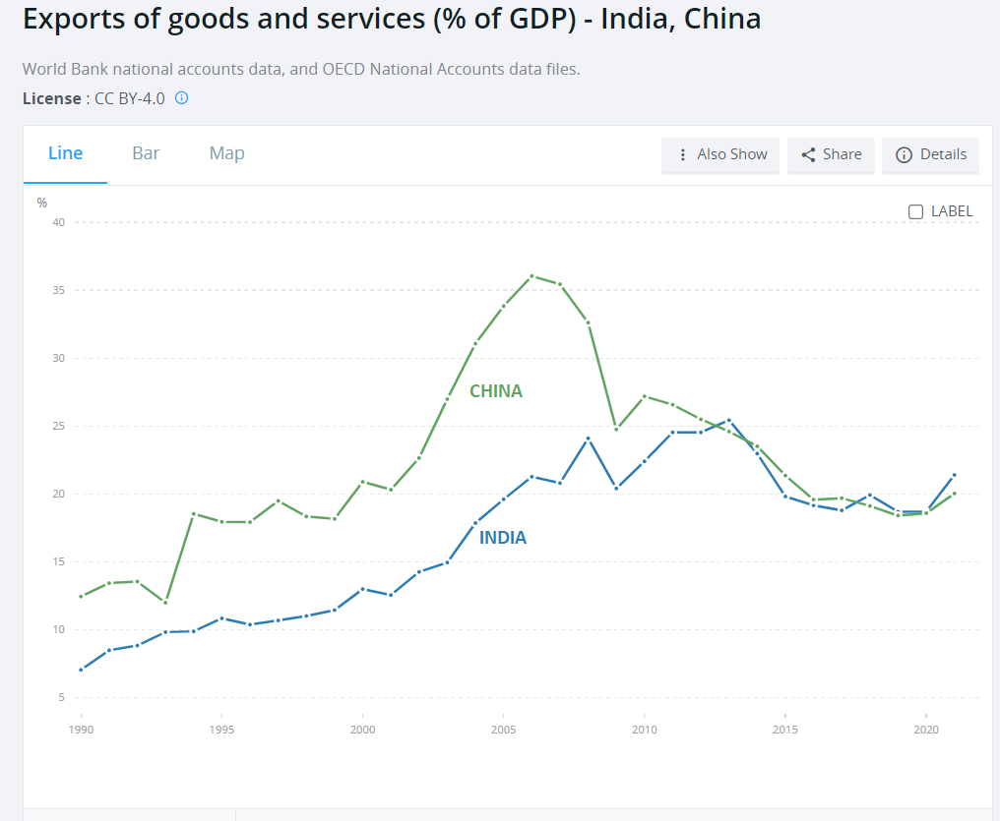
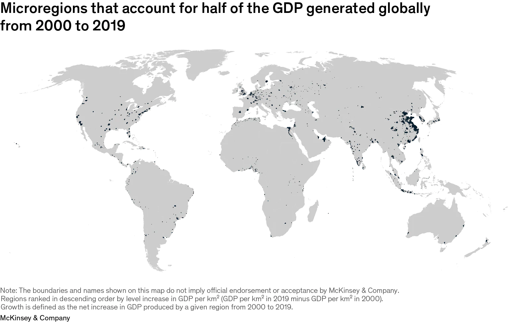

60 Development Economics
The primary task of economic development is to bring people out of poverty. (And when that is done, what should development be?)
Progress is the increase of options (Noah Smith)
“Development” (growing bio-economic pressure) amounts to increasing the total energy throughput of the economy while decreasing the amount of human activity allotted to the productive sector. (Giampietro/Fix)
Trainer
Thinking about development is dominated by a conventional conception which takes for granted the centrality of increasing production for sale, integration into the globalized market place, moving to more sophisticated technologies, and the goal of rising to affluent rich-world living standards. Basic criticisms of this conception of development are briefly summarized, firstly to do with the way it has primarily benefitted the rich and secondly regarding its grossly unsustainable resource implications. Global biophysical resource endowments prohibit its realization. There has been remarkably little thinking from conventional or critical sources on the goals and means which a sustainable alternative must take. The Simpler Way project is concerned to show the necessity for, and desirability and workability of, the development of mostly small scale, cooperative, highly self-sufficient and self- governing local economies focused on meeting basic needs, and not concerned with economic growth, globalization, competing in the global market place, or aspiring to rich-world “living standards”. It is argued that only some form of Simpler Way can enable satisfactory global development within sustainable resource and ecological limits.
The major fault in most if not all previous development thinking has been failure to grasp the need for materially simple lifestyles and systems.
Conventional development can be regarded as a form of legitimized plunder.
Alternative, appropriate development … The simpler way
The basic element in appropriate development is the small, highly self-sufficient and largely co-operative local economy.
The transition can be a process of gradually building a new “Needs-Driven-Economy” underneath the old “Profit-Driven-Economy”. It can begin by a few coming together as a Community Development Cooperative to organize the provision of some neglected basic goods and services, for example by setting up community gardens, poultry co-ops or aged care rosters. Their long term goal would be to increase these cooperative, socially desirable non-market activities until they might largely replace the old economy.
Trainer (2021) Third World Development RWER 95 (pdf)
60.1 Structural Reforms
Braun on Draghi’s ‘Refrorm Thesis’
Draghi was a structural reformer avant la lettre: He uses the term “reform” exactly as it would come to be used in “structural reforms”. Except that the concept didn’t exist at the time.
Draghi’s thesis fully articulates the theory that came to bring us structural reforms: A planner opting for short-run stimulus will never reach the optimal long-run path. By contrast, enforcing optimum long-run policies today will not have negative short-run consequences.
Noting that “the common finding is a positive relationship between real wages and employment”, Draghi seeks to refute that finding, describing it an artifact of faulty methodological choices.
Structural reformers must reject the idea of a positive wage-employment relationship because SRs are supposed to boost employment precisely via lower real wages.
Braun - Twitter Thread on Mario Draghi’s Thesis
Tooze on Draghi/Yellen new assignments
It would be absurd to blame either Draghi or Yellen personally for the sequence of shifts and shocks that has destabilized capitalist democracies since the 1990s or the crisis of confidence these have triggered among centrist liberals. But as people of huge influence and as representatives of a class of experts who have ruled the roost for the last 30 years, they can hardly plead innocence either. It was on their watch that growth slowed, inequality between social classes and regions became ever deeper, and the risk of inflation tipped into that of deflation. It was on their watch that the financial system was allowed to become a flywheel of mass destruction. It was on their watch that the risks of climate change and pandemic threats went unaddressed.
If broad-based growth cannot be restarted, the implications are alarming.
Whereas the market revolutionaries of the 1970s and ’80s were radicals, squashing the last bastions of the old left and bulldozing organized labor out of the way, Draghi and Yellen came to the fore in the 1990s as managers of what is now known as the Great Moderation.
Inheritors of the market revolution, committed to managing and improving the status quo, Draghi’s and Yellen’s march through the institutions has been glorious, but their careers have also been defined by constant adjustment to political and economic shocks that they did not foresee and could not control. These shocks have driven Yellen and Draghi to explore the political and economic boundaries of technocratic power.
At MIT and Yale in the 1970s, they imbibed what was known as the neoclassical synthesis. The central idea was that though the microeconomics of markets were important, markets would function properly only so long as the macroeconomic environment was set correctly. Keynesianism and market economics were not opposites but complements.
In the 1980s, Yellen played an important part in shaping the further development of the neoclassical synthesis known as New Keynesian economics. Working alongside the likes of Joseph Stiglitz and George Akerlof, she mapped how labor market imperfections could give rise to macroeconomic problems. Those rigidities in wages and prices, in turn, also enabled macroeconomic policy to work. It was because markets were slow to adjust that unexpected movements in interest rates, taxes, and government spending could have real effects.
Draghi’s work at MIT was less intellectually generative than Yellen’s. But his dissertation is nevertheless revealing. It includes a chapter in which he describes how planners trying to manage an economy subject to short-run fluctuation are more successful if they focus on long-run goals. Long-range strategy, regardless of short-term cost, will do better than a hectic effort to optimize at every moment.
Though they owe little to the Chicago school, it does not follow that Draghi and Yellen were not exponents of neoliberalism. On the contrary: They were strong advocates of markets. Competition and properly designed incentives were the recipe for productivity and growth.
In the world economy, they favored the free capital movement and flexible exchange rates that defined the so-called Washington Consensus of the 1990s. It was Rudiger Dornbusch, the pope of international macroeconomics at MIT and one of Draghi’s chief mentors, who described the project of his generation as being the taming of “democratic money.” In the wake of the collapse of the Bretton Woods financial order and the U.S. dollar’s gold peg, the chief enemies of good economic governance were shortsighted trade unions pushing for higher wages and vote-chasing politicians. Once trade unions were curbed and politicians confined to their proper tasks, Friedmanite monetarists hoped that prices could be stabilized by mechanical monetary rules.
But by the early 1980s, that had proved naive. For the MIT crowd, what keeping money safe from democracy amounted to was placing it under the control of competent experts credibly committed to providing markets with the stable framework they needed. The independent central bank was their institutional bastion.
The global financial order developed by economic elites—from the 19th-century gold standard to the gold-pegged dollar of the Bretton Woods system to the worldwide preoccupation with independent central banks after Bretton Woods dissolved—has always involved imposing constraints on policymakers. In the 1980s, devices such as exchange rate pegs were all the rage in Asia as well as Europe for signaling self-discipline to financial markets.
For all their inside status and expertise, neither Yellen nor Draghi gave any public sign of anticipating the crisis that was to come. The same was true for the vast majority of their cohort, whether MIT or Chicago. The scale of the systemic risk posed by the financial system of the advanced economies simply did not register until it was too late.
The consistent failure to deliver adequate fiscal policy responses to the crisis after 2008 went against all the preconceptions of 1970s MIT-style macroeconomics.
Where were the spendthrift politicians when you needed them? The fiscal undershoot by the Obama administration could perhaps be explained by miscalculation and Republican partisanship. But the fact that a centrist majority in the heart of Europe, faced with dangerous populist challenges from the left and right, would choose to die on the hill of budget balance was not part of the plan.
It was up to the ECB to act. In 2015, to the horror of German conservatives, Draghi finally launched a QE program. This was a technical economic measure. But it had spectacular political effects. It enabled the European Council to play hardball with the radical left-wing government in Greece without causing the bond markets to panic. One might say it marked the Americanization of the ECB.
Seven years on from the collapse of Lehman Brothers, a majority on the Fed board was swinging toward tightening. The point was not so much that the U.S. economy needed restraining as that they were deeply uncomfortable with interest rates remaining at zero. It stoked speculation in financial markets and gave the Fed nowhere to go if it needed to counter a downturn. Negative interest rates along the lines adopted by Japan were not something that the Fed wanted to contemplate.
The basic framework of 1970s macroeconomics that framed Draghi and Yellen’s training and outlook, like that of the rest of their cohort, was that properly structured markets would take care of growth. Well-regulated financial systems were stable. The chief priority for economists was to educate and restrain politicians to ensure that inflation remained in check and public debts were sustainable.
Financial instability is a mortal risk. For now, it is being held at bay. But the world saw as recently as March 2020 how rapidly even the largest financial market—the market for U.S. Treasurys—can be destabilized. To tame that risk, the Fed and the ECB, under Yellen’s and Draghi’s non-economist successors—Jerome Powell and Christine Lagarde, respectively—have adopted an astonishingly undogmatic and expansive approach to stabilization.
The Italian political class is abdicating in favor of a retired, unelected official in his 70s.
Faced with a decisive historical challenge—restarting growth after decades of stagnation—Italy’s political class has chosen to delegate executive power to someone who has never been elected to office. It is the ultimate victory of technocracy but also a do-or-die challenge.
The truly strategic challenge facing progressive politics in the United States as in Europe is to find a new model of inclusive and environmentally sustainable economic growth
In the 1990s, you didn’t need to be a naive exponent of the post-Cold War end-of-history argument to think that the direction of travel for global politics was clear. The future belonged to globalization and more-or-less regulated markets. The pace was set by the United States. That enabled technocratic governments to be organized around a division between immediate action and long-term payoff. That was the trade-off that Draghi evaluated in his MIT Ph.D. in the 1970s. The drama of Draghi and Yellen’s final act is that for both of them, and not just for personal reasons, the trade-off is no longer so clear-cut. If the short-term politics fail, the long-term game may not be winnable at all. “Whatever it takes” has never meant more than it does today.
Tooze (2021) Draghi/Yellen - Can they control what comes next?
60.2 Industrial Policy
60.2.1 Import Substitution
Irwin Abstract
In the 1950s, many economists believed that import substitution – policies to restrict imports of manufactured goods – was the best trade strategy to promote industrialization and economic growth in developing countries. By the mid-1960s, there was widespread disenchantment with the results of such policies, even among its proponents. This paper traces the rise and fall of import substitution as a development idea. Perhaps surprisingly, early advocates of import substitution were quite cautious in their support for the policy and were also among the first to question it based on evidence derived from country experiences.
Irwin (2020) THE RISE AND FALL OF IMPORT SUBSTITUTION (pdf) (pdf)
Smith on India
Why did import substitution fail? Chang and Studwell’s answer would probably be that making things for the domestic market doesn’t force companies to increase their productivity. It doesn’t help them discover their comparative advantage relative to foreign companies. It doesn’t push them to develop new products. It doesn’t give them much of an incentive, or even much of an opportunity, to absorb foreign technologies. The domestic market is safe, familiar, and uncompetitive, and it’s often possible to dominate it through political cronyism rather than through brutal technological competition.
60.2.2 Export-led Growth
Ha-Joon Chang
Industrial policy can work – sometimes spectacularly well – although it can also fail – sometimes miserably.
Picking on my emphasis on the importance of export performance as a performance indicator, I then talked about the critical importance of export policy, which requires not just free trade but a mixture of free trade, export promotion, and infant industry protection.
The debate, have focused too much on “grand” things like the Big Push, when much of real-life industrial policy has been about “boring” things, like getting the production scale right and providing export marketing services.
Appreciate how critical export is for the success of industrial policy, while [also] appreciate how export success also requires industrial policy.
Ha-Joon Chang (2009) Industrial Policy: Can We Go Beyond an Unproductive Confrontation? (pdf)
Smith on India
India lags in manufacturing but does OK on exports The stereotype of India’s economy is that it relies on services more than on manufacturing. That’s actually pretty accurate; manufacturing is a smaller percent of the economy than Bangladesh or Vietnam, and the trend line is headed in the opposite direction:

But according to what I’ve been calling the “Chang-Studwell” theory of development — based on the book How Asia Works, any of Ha-Joon Chang’s books, and this IMF paper — what matters most is not manufacturing per se, but exports. And I don’t mean “net exports”, i.e. trade surpluses vs. trade deficits — I simply mean the amount of stuff a country sells overseas. The basic idea is that exporting forces companies to raise their productivity levels and learn foreign technologies (by hiring foreigners, by maintaining overseas offices, or just by stealing intellectual property). In this theory, manufacturing is important simply because manufactured goods are easy to export, and because manufacturing industries have opportunities for rapid productivity growth.

And India actually does a pretty good job exporting — about as good as China, and as good or better than China in the 1990s.
Not much labor-intensive manufacturing in exports. Labor-intensive manufacturing is useful for generating employment, for moving poor people from farms to cities, and — at least, if you believe Ha-Joon Chang — for developing a widespread culture of manufacturing.
60.2.3 Service-led development
India’s exports of services are 60% as large as its exports of goods. The thing about services is, we don’t really know how well they contribute to development. Services have only really been exportable en masse for a short amount of time, thanks to the advent of the internet, so there isn’t a long record of countries that exported a bunch of services.
Development runs on agglomeration effects — producers, suppliers, and customers all wanting to locate near each other — and services don’t require nearly the same supply chains that manufacturing does. This means we might expect to see services generate a smaller local multiplier effect (sometimes called an “external multiplier”), leading to less urbanization and product diversification.
Harder to improve productivity in services than in manufacturing.
For service exports that are basically just local services beamed overseas by the magic of the internet — for example, India’s famous call centers — there probably isn’t as much room for rapid technological upgrading.
If you were an electronics maker or a carmaker in Singapore or South Korea or Poland back when those countries were poor, you just didn’t have a huge safe domestic market to hide in. But if you’re an Indian manufacturer right now, even though India is still poor, the domestic market is still so big that there’s less incentive to take the icy plunge into the international waters. If you think this theory is right, then India will need to work especially hard to push its companies to make things for the world instead of just for India.
Fortunately, the Modi administration may have (belatedly) gotten this message. Last year he announced a new slogan: “Make for the world.” Presumably this means a shift from production incentives to export incentives.
Smith (2023) Can India industrialize?
(???)
60.2.4 FDI Regulation
Chang Abstract
Based on a historical survey of the experiences of the USA, the EU member states and the East Asian economies, the paper argues that during their early stages of development, now- developed countries systematically discriminated between domestic and foreign investors in their industrial policy. They have used a range of instruments to build up national industry. They included: limits on ownership; performance requirements on exports, technology transfer or local procurement; insistence on joint ventures with local firms; and barriers to ‘brownfield investments’ through mergers and acquisitions. On the basis of this, the paper argues that a multilateral investment agreement (MIA) at the WTO, founded on principle of national treatment, is likely to harm the developing countries’ prospects for development. Our historical survey shows that, only when domestic industry has reached a certain level of sophistication, complexity, and competitiveness do the benefits of non-discrimination and liberalisation appear to outweigh the costs. As a result, countries generally move towards a greater degree of non- discrimination and liberalisation as they develop. In that sense, contrary to the claims of the demandeurs of the MIA non-discrimination is better seen as an outcome of development, not a cause
Chang (2003) Regulation of FDI in historical perspective (pdf)
60.2.5 FDI
Smith on Chang/Studwell
At this point, let’s take a moment to talk about why Ha-Joon Chang and some other industrial policy fans think that FDI is not the basis of a sound development strategy. Chang has gone to great lengths to show that today’s rich countries — the U.S., Japan, and so on — restricted or even banned FDI during their early stages of development. But that doesn’t tell us why it’s bad, or even if it’s bad; the rich countries could have succeeded in spite of this policy. Part of Chang’s distaste for FDI comes from the fact that a lot of it is actually just foreign companies acquiring local ones, rather than building new factories; this could result in the foreign companies stunting the growth of the local ones, whereas if they had remained independent they could have risen to become competitors. Also, some FDI goes into real estate, which often just pumps up property values unhelpfully and may set economies up for bubbles and crashes.
But another reason the industrialists are suspicious of FDI is that even “greenfield” FDI — i.e., when a foreign company comes in and builds its own factory in your country — might crowd out domestic companies. If all the good engineers and managers go to work for foreign companies, it could starve local startups of the resources they need to grow. And since foreign companies are likely to reserve the highest-value-added parts of the supply chain (design, high-tech, branding, marketing, etc.) for their home countries, having a manufacturing sector dominated by these multinationals could prevent a company from developing its own globally competitive brands and technologies — like an apprentice whose master will never let him learn his most secret tricks of the trade.
Poland and Malaysia may now be running into this problem.
McKinsey cites Poland’s need to develop or acquire strong brands in order to catch up with West Europe. The failure of Malaysia’s attempt to build domestic champions is worrying.
And yet I see two responses to this. The first is: Do we really care? Poland and Malaysia may not be as rich as Germany or Korea, but they’ve definitely escaped poverty. Countries like Bangladesh or Vietnam or Ghana or even Mexico would kill to have a per capita GDP of $30,000. That’s about the GDP of the U.S. in the early 1980s. Is it really fair to call that level of development a “middle income trap”? If you’re a poor country, and you have a reliable, dependable way of getting as rich as the U.S. was in the early 1980s, dammit, you take it. You don’t worry about whether that strategy will eventually make it harder to get as rich as the U.S. of 2023.
Because developing the South Korean way, by building a bunch of world-beating high-tech manufacturing companies from scratch, is incredibly hard. An FDI-centric strategy, on the other hand, is simple and straightforward, almost cookie-cutter — you give all your people a high school education, you build some roads and electric power lines and sewage lines, you designate some Special Economic Zones, and you give foreign companies big tax incentives and investment incentives and regulatory incentives to come in and hire your plentiful low-wage workers to make electronics and automotive goods and other complex products for export. Voila! No need to build the next Samsung or the next Hyundai; the existing Samsung and Hyundai will do nicely.
This is a bit similar in spirit to the way Tennessee, Kentucky, and Alabama lured U.S. automakers away from high-wage unionized northern states with the promise of cheaper non-union labor. You don’t see Tennessee or those other states becoming home to the new Detroit; all the big car brands are still headquartered elsewhere. Eventually this strategy ran out of gas, but it worked for a while.
(Comments:) In the context of the EU, I feel like Poland has been helped a lot by keeping its own currency instead of adopting the Euro.
60.3 TechFare
Bhagat
Big Tech has long thrived on regulatory evasion and the exploitation of legal grey areas.
In this literature, then, the tendency is to assume that it is an absence of state intervention that has underpinned the technology industry’s growing economic (and political) power. With our conception of techfare, however, we aim to push beyond these explorations of how Big Tech evades state control. Instead of focusing on state absences, we set out to highlight an equally significant dynamic: how the technology industry has become deeply entwined with the activities of the neoliberal state.
As is well known, neoliberalism has yielded specific forms of state intervention to discipline and normalize the surplus population and to regulate social insecurity. Filling the void left by the retrenchment of social and welfare spending, these forms include Jamie Peck’s workfare, Susanne Soederberg’s debtfare, and Loïc Wacquant’s prisonfare. As the technology industry has inserted itself more deeply into consumer credit markets and surveillance activities, it has augmented both debtfare (which normalizes and encourages reliance on private sources of credit to augment wages and regulate social insecurity) and prisonfare (which criminalizes poverty through policies that extend the reach of the police, courts, jails, and prisons). And, as the two vignettes below show, it has done so in ways that not only support the ongoing efforts of the neoliberal state, but that also underpin the growth and profitability of Big Tech itself.
The penetration of Big Tech into the realm of consumer finance has clear parallels with what Gabor and Brooks (2017) call the fintech-philanthropy-development nexus. Gabor and Brooks argue that fintech has accelerated the financial inclusion of the poor and enhanced financial institutions’ ability ‘to bank the unbanked. Big Tech, too, is adopting these logics of financial inclusion: the technology giants have vast stores of user data and trusting consumer bases that have allowed them to extend financial services globally. For instance, the total alternative credit model—a combination of fintech and lending by Big Tech companies—reached $800 billion in 2019. In Asia, Africa, and Latin America the presence of Big Tech credit grew rapidly, coinciding with the decline of fintech credit volumes due to market regulation in China.
Our snapshots surrounding consumer finance and surveillance act as central examples of arenas where techfare augments extant modes of neoliberal regulation in the face of social insecurity. In aligning with debtfare, we are interested in how the vacuum left by welfare retrenchment and the decline of traditional financial actors has paved the way for Big Tech to become a player in consumer finance through new innovations on payday loans, credit cards, and other lending services that explicitly target low-income earners. In relation to prisonfare, we also highlight how Big Tech profits off of surveillance by extending the carceral state to the level of the neighbourhood and the household. Facial recognition is often seen as a public safety tool. But its potential to erode privacy and criminalize vast numbers of people while generating both revenue and data for Big Tech is an important direction for future research.
Bhagat (2021) The Techfare State: The ‘New’ Face of Neoliberal State Regulation
60.4 Market-based Development Finance in Crisis
Tooze
To treat the news from Ghana [On debt default des. 2022] as “just another predictable crisis”, is to trivialize and to fail to grasp the significance of the current moment.
Ghana is an important African success story. In recent times it has been the site of sustained efforts to improve labour practices and the terms of trade for peasant cocoa farmers. In 2020 its stress-free elections contrasted favorably to the democratic anxiety in the United States. Ghana has been praised for its efforts to extend health insurance to 70 percent of the population, topped up with cash benefits for the poorest. Accra boasts a vibrant fashion and design culture. The interior is touted as destination for adventurous trekking tourists.
An ample flow of money was key to this success story. And not just the volume of funding mattered, but how it flowed.
Up to the Millenium, the main form of lending to Africa was concessional bilateral lending by Paris Club members. That ended in the early 2000s with the Heavily Indebted Poor Countries Initiative backed by the International Monetary Fund and World Bank. That wrote down a huge slice of unpayable debt. In the aftermath, new bilateral concessional lending by the Paris group of creditor countries was reduced to a trickle. Instead, led by the United States they have provided support above all in the form of grants and development assistance. This is less encumbering than concessional loans, but it is also restricted in volume. In a substantial economy like Ghana, let alone an economy the size of Nigeria, grants and development assistance are unlikely ever to achieve transformational scale.
Meanwhile, lending by the World Bank and other Multilateral Development Banks has provided a relatively steady flow of funding. But the big new player in the development finance scene is China. At its peak in 2017 Chinese development lending was larger than that of the World Bank. China’s large-scale funding met much suspicion and has now run out of stream. Much of it has had to be renegotiated with stressed borrowers. Which leaves the question. What is the development vision that “the West” actually offers to the developing world? Over the last twenty years, insofar as the West has had a model of development funding, it has been one of public-private partnership: develop the financial infrastructure of borrowing countries so as to enable them to attract funds from private lenders on global markets.
Since 2008 the surge in non-Chinese private lending dwarfs all other funding flows to Africa. In part it was driven by genuine development on the part of the borrowers. But, in the era of quantitative easing, it was also impelled by the search for yield in frontier markets. As QE is replaced by QT and interest rates in the US rise sharply, that funding model that is now in question.
The Ghana crisis matters beyond its immediate impact, because it was the poster child for this model of private finance.
The situation in Ghana is bad, but it is by no means alone. Whereas in 2008 the African continent was largely insulated from the shock of the global banking crisis, it is now, as a result of being more integrated into the global economy, feeling the pinch from global movements in prices and interest rates.
When the headlines announce that Ethiopia, Kenya and Ghana are all in trouble, that could be read as a series of national stories. But it is more than that. General narratives are fashioned out of particular cases and over the last 15 years Kenya, Ethiopia and Ghana have been amongst the most important success stories of the African continent. The current rash of crises puts that entire narrative in play.
What every vision of sustainable development implies, is a giant transformation in political economy, a combined social and political transformation, centered on capital markets and the tax state. At other times and in other places, this might have been seen as the blueprint for a bourgeois revolution. Such a revolution entails the development of property right and markets, but public finances too are a critical arena of transformation and struggle.
[Tooze (2022) Chartbook #181: Finance and the polycrisis (6): Africa’s debt crisis](https://adamtooze.substack.com/p/finance-and-the-polycrisis-6-africas
60.5 How Asia Works
Smith on Studwell
I like How Asia Works because it tells a coherent story about how countries get rich. Basically, Studwell says it’s a three-step process:
Land reform: Forcibly buy up tenant farms from landlords and give it to the tenants; this increases farm productivity per unit of land area, gives rural people more to do, provides small farmers with some startup capital should they choose to sell their farms and move to town, and pushes landlords themselves to move to cities and use their talents to start more productive businesses.
Export discipline: Push companies to export instead of just selling domestically. Cut off support to companies that try to export and fail. This will push companies to increase productivity in order to compete in world markets, especially by learning foreign technology.
Financial control: Push banks to support exporters instead of putting their money into real estate bubbles and the like.
It’s very difficult to test whether this model really works, or whether the successful development of countries like South Korea and Taiwan was due to something else. We can look at evidence for pieces of the theory — for example, the idea that small farms tend to be more productive than medium-sized ones seems fairly well-supported in the data, and there’s also some evidence that pushing companies to export does cause them to raise their productivity.
But Studwell’s model is so complex that it’s hard to test all the pieces together. And if you need all the pieces in place — for example, if export promotion doesn’t work without the “discipline” of winding up failing firms, or if land reform fails if you don’t allow farmers to sell their land, or if export discipline itself doesn’t work without land reform — then testing the pieces individually won’t give us the answers we want.
Because it’s so hard to test, the theory serves less as a tried-and-true policy prescription and more as a launching point for ideas about how to manage a developing economy
Smith on Krugman, Fujita and Venables’ The Spatial Economy
We might start to wonder if successful development policies simply determine countries’ place in a queue. My longtime readers will also know that in addition to How Asia Works, I love Krugman, Fujita, and Venables’ The Spatial Economy. And in the final section of that (highly technical) book, the authors turn what was a humble theory of urbanization into a grand theory of global development. And the upshot of that grand theory is that countries have to basically wait in line to get rich. There’s just no way for them to all hop on the rapid industrialization train all at once. Better policy can let you cut to the front of the line, but then the countries you cut in front of are out of luck.
This is a highly stylized, pretty speculative theory, which is even harder to prove than Studwell’s. But it kinda-sorta fits the observed pattern in Asia — first Japan and Hong Kong and Singapore grew quickly, then Taiwan and South Korea, then China, now Vietnam and Indonesia. Malaysia and Thailand got a head start on China but then slowed down after the financial crisis of ‘97, while China accelerated — perhaps because China “cut in line” in front of the Southeast Asian tigers. But now, with China slowing down, perhaps Malaysia is back at the front of the line.
Anyway, this would be a depressing, fatalistic sort of world, where development is a zero-sum-game in the short term. Hopefully it’s not true — I’d much rather believe in a Studwellian world where the right smart growth policies can boost lots of countries at once. But we may never know which is right.
Smith on Chang and Studwell
We don’t really know how economic development happens, and to put too much faith in the Chang/Studwell story would be unwise.
Smith (2021) Jamaica is doing OK Could it do better than OK?
60.7 MFD - Maximizing Finance for Development
Gabor
The World Bank video explains the process — formally termed the Cascade Approach — for turning everything into an asset class. The Cascade Approach offers a sequence of steps to diagnose why global investors are reluctant to finance development projects: first, identify reforms (regulatory or other policies) that improve the risk-return profile; if reforms are insufficient, then identify subsidies and guarantees to de-risk the project; if reforms, subsidies, and guarantees are still not enough, then opt for a fully public solution. This is a blueprint for promoting shadow markets in which bankable projects can be transformed into liquid securities ready for global institutional investors.
To achieve this, the mfd agenda envisages creating three new markets where they are currently missing: derivative, repo, and securitization markets. Foreign investors will need derivative markets where they can hedge currency risk if they are to hold local currency bonds, and repo markets where they can finance those securities in local currency. Furthermore, the World Bank will promote the development of securitization markets that can transform loans into tradable securities, thus leveraging its own limited resources.
The MFD agenda thus reimagines international development interventions as opportunities for global finance. Through multilateral development banks, global (shadow) banks will be able to influence, if not altogether shape, the terms on which poor countries join the global supply of securities.
Poor countries will have less room to define what is a “bankable” project and will have to accept large infrastructure projects at the expense of smaller projects with more developmental potential. The World Bank will lead the efforts to design the “de-risking”/subsidies measures that will seek to protect global investors from political risk, or the demand risk associated with privatized public services.
As Jim Yong Kim, the World Bank’s president put it in 2018: “We have to start by asking routinely whether private capital, rather than government funding or donor aid, can finance a project. If the conditions are not right for private investment, we need to work with our partners to de-risk projects, sectors, and entire countries.” But the World Bank should also be asking who pays for de-risking.
The answer is uncomfortable. Poor countries will bear the costs of de-risking, guaranteeing private financial profits. Middle-income countries with a rising middle class will be pressured into adopting the US model of private pensions in order to create local institutional investors. The tendency toward concentration in the asset-management sector (to exploit economies of scale and scope) may result in US-based asset managers absorbing the funds of poor countries’ institutional investors, and making allocative decisions on a global level.
This celebration of the opportunities that financial globalization creates for poor countries is strangely quiet on its downsides. This is not for lack of research. Elsewhere, the IMF recognizes that financial globalization has generated a global financial cycle: securities and equity markets across the world, capital flows and credit cycles increasingly move together, all in the shadow of the US dollar. The global financial cycle confronts poor countries with a dilemma, named after the French economist Hélène Rey: there can be either free institutional flows into securities markets or monetary policy independence.
The MFD agenda — development aid is dead, long live private finance! — will make it more difficult for poor countries to choose monetary-policy autonomy and actively manage capital flows. In choosing to surrender to the rhythms of the global financial cycle, poor countries surrender their ability to influence domestic credit conditions, and therefore, autonomous growth strategies.
In this reengineering of financial systems in the Global South, the space for alternative development strategies shrinks further. Public resources have to be dedicated to de-risking “developmental” assets, to identifying “bankable” developmental projects that can easily be transformed into tradable assets, to mopping up the costs of the financial crisis inevitable with this more fragile model, all the while dismantling the financial infrastructure that might support a developmental state (including developmental banking by state-owned banks).
60.8 Universal Basic Prosperity
Percy Abstract
Technical development of economies leads to a conflict between the rising cost of collective needs and motivation. Without increases in welfare efficiency, safety is reduced. Reduced safety causes participation decay, creates a tax trap, results in lost productivity, incentivises environmental destruction, and leads to financial instability. Developed societies will have to deliver effective safety efficiently, as a precursor to addressing other problems. Effective satisfaction of safety needs at a cost that does not erode motivation would revive participation, foster reciprocity, boost productivity, license environmental sustainability, and enable financial stability. Mal-adaptation to resource pressures in developed societies has caused macro instability across social, economic, and environmental dimensions. A conflict in developed societies, between social safety and motivated opportunity, has been unfolding for a century, and intractable for the last 40 years. Problems of insecure livelihoods, unstable finance, and environmental destruction are outcomes of failed attempts to resolve that conflict. To resolve those problems and prevent decline, developed societies will need to strengthen reciprocity in their tax systems, so that they can increase the efficacy and efficiency of their welfare systems. This paper sets out to first clarify the roles of safety, opportunity, and participation, and the binding function of reciprocity in their arrangement. It then reviews the path of taxation in developed societies as they progressed from industrial economies to technically advanced economies over the 20th century. It demonstrates how attempts to suppress taxation, while preserving development status, are connected to insecure livelihoods, unstable finance, climate destruction, and weakened reciprocity. The last section proposes options for establishing strong reciprocity by reforming tax, fiscal and welfare arrangements, to align with achieving universal basic prosperity in the 21st century. The National Contributions report, released as an adjunct report, details tax reform proposals for the UK that conform with the proposals in this paper.
Percy Memo
Finance eroding collective safety
Many of the features of today’s advanced societies are consequences of the strategies adopted by developed countries, most aggressively by the UK and US from the 1980s onwards, in an attempt to reconcile safety costs with revenues from taxation. Instead of increasing the efficiency of their safety provision, advanced societies elected to prioritise opportunity over safety. Responsibilities for safety were pushed back to individuals where possible, and the extent of collective safety curtailed where not. To enrich the economy, production shifted to societies where costs could be externalised; where safety costs were lower, and where unsustainable resources could be exploited as much as possible.
Attempts to live with and justify a safety gap over the last 40 years have failed, and created additional barriers to prosperity. Individuals cannot create their own safety, so the net provision of safety has fallen. That has led to a decline in specialisation and stagnant productivity.
Over the last 40 years, finance has been handed the poisoned chalice of responsibility for social safety. In its attempts to conform to that responsibility, it has contorted its workings so much that it is ineffective in its proper role of allocating capital to productive needs. Instead, it is supporting the destruction of global commons, while dependent on public guarantees. Finance is now both powerful and crippled, at once the tentpole for the system and the poster child for instability.
Savings as private safety
When a society transfers responsibility for safety back to its constituent members, their only option, outside unreliable familial ties, is to accumulate assets that offer the possibility of being converted into safety when needed. But: safety represented in financial assets is unreliable.
Transferring responsibility for safety out of the collective and to the individual, and therefore out of taxation, does not reduce the cost, the need, or the conflict between safety and opportunity. Participation is stifled when this inherent contradiction is not openly addressed. The conflict between safety and opportunity becomes embedded as ‘the way it is’, rather than a problem to be solved. One side argues for compensation to include safety, and the other side argues for compensation to mirror opportunity.
The result of a policy to transfer safety to individuals is a dramatic increase in the volume of savings in the society. The quantity of savings that needs to be stored will tend to push up the value of assets, push down interest rates on debt, and increase demand for risky investments .
Partly because there are so many savings chasing investments, and partly because of implicit guarantees against losses, the returns on risky investments fall. This leads to even riskier investments becoming part of people’s savings. This process continues until all savings include unrecognised losses. When an event happens that would threaten to force the recognition of losses, because the implications for the loss of safety are so politically significant, governments are forced to rescue the value of the assets. When those rescues use public resources to shore up the value of private assets, the losses are passed, unrecognised, from private liability to a social liability.
Safety is not a transferable quality. The responsibility for safety rests permanently and unavoidably with the only entity capable of providing it: the society. No other entity or individual can replicate the qualities of a society, so it is inevitable that any attempts to transfer safety eventually fail, and the responsibility returns to society. The public guarantee exists, whether it is overtly and consciously acknowledged or not.
The larger the quantity of savings, the cheaper debt becomes as savings compete for it, and the larger it grows.
The reliance on maintaining a specific set of economic conditions to prevent large-scale destruction of financial values, which would destabilise the basis on which societies have proposed to establish social safety, is the textbook definition of instability.
Growth does not increase resources for safety needs in a technically developed society because safety needs rise with growth. To grow, a technically developed society has to become more specialised, not less. As we’ve established, broader specialisation drives up safety needs as a share of production
The cessation of exploitative practices presents an existential threat to developed societies.
If growth, which has been slowing, eventually stops, the implications for financial values are dire. Assessing the scale of the phantom value incorporated in today’s asset prices is not possible because “there is no way to distinguish between real income and profits or bezzle-boosted income and profits” (Bezzle: see below)
Key is: Closing the safety gap using only sustainable resources.
Until societies take responsibility for their own safety, they will underperform while remaining dependent on increasingly unstable financial systems and on exploiting global commons.
A state of universal basic prosperity, in which safety, opportunity, and participation are cherished equally, is achievable with relatively minor adjustments, especially when compared to awaiting the breakdown of the financial system or the environment.
Percy (2021) Universal Basic Prosperity: Sustainable prosperity for the 21st century (pdf)
Bezzle
The bezzle, a word coined in the 1950s by a Canadian-American economist, is the temporary gap between the perceived value of a portfolio of assets and its long-term economic value. Economies at times systematically create bezzle, unleashing substantial economic consequences that economists have rarely understood or discussed.
In a famous passage from his book The Great Crash 1929, John Kenneth Galbraith introduced the term bezzle, an important concept that should be far better known among economists than it is. The word is derived from embezzlement, which Galbraith called “the most interesting of crimes.” As he observed:
Alone among the various forms of larceny [embezzlement] has a time parameter. Weeks, months or years may elapse between the commission of the crime and its discovery. (This is a period, incidentally, when the embezzler has his gain and the man who has been embezzled, oddly enough, feels no loss. There is a net increase in psychic wealth.) At any given time there exists an inventory of undiscovered embezzlement in—or more precisely not in—the country’s business and banks.
Certain periods, Galbraith further noted, are conducive to the creation of bezzle, and at particular times this inflated sense of value is more likely to be unleashed, giving it a systematic quality:
This inventory—it should perhaps be called the bezzle—amounts at any moment to many millions of dollars. It also varies in size with the business cycle. In good times, people are relaxed, trusting, and money is plentiful. But even though money is plentiful, there are always many people who need more. Under these circumstances, the rate of embezzlement grows, the rate of discovery falls off, and the bezzle increases rapidly. In depression, all this is reversed. Money is watched with a narrow, suspicious eye. The man who handles it is assumed to be dishonest until he proves himself otherwise. Audits are penetrating and meticulous. Commercial morality is enormously improved. The bezzle shrinks.
Galbraith recognized, in other words, that there could be a temporary difference between the actual economic value of a portfolio of assets and its reported market value, especially during periods of irrational exuberance. When that happens, Galbraith pointed out, “there is a net increase in psychic wealth.”
60.9 Micro-Regions
McKinsey
Granular dataset offers a dramatically different view of human development around the world, uncovering the true depth and breadth of progress in places previously obscured by country averages.

McKinsey (2022) Pixels make the picture: A guided tour through the granular world
60.6 Social Provisioning of Needs
Vogel Abstract
Meeting human needs at sustainable levels of energy use is fundamental for avoiding catastrophic climate change and securing the well-being of all people. In the current political-economic regime, no country does so. Here, we assess which socio-economic conditions might enable societies to satisfy human needs at low energy use, to reconcile human well-being with climate mitigation. Using a novel analytical framework alongside a novel multivariate regression-based moderation approach and data for 106 countries, we analyse how the relationship between energy use and six dimensions of human need satisfaction varies with a wide range of socio-economic factors relevant to the provisioning of goods and services (’provisioning factors’). We find that factors such as public service quality, income equality, democracy, and electricity access are associated with higher need satisfaction and lower energy requirements (‘beneficial provisioning factors’). Conversely, extractivism and economic growth beyond moderate levels of affluence are associated with lower need satisfaction and greater energy requirements (‘detrimental provisioning factors’). Our results suggest that improving beneficial provisioning factors and abandoning detrimental ones could enable countries to provide sufficient need satisfaction at much lower, ecologically sustainable levels of energy use. However, as key pillars of the required changes in provisioning run contrary to the dominant political- economic regime, a broader transformation of the economic system may be required to prioritise, and orga nise provisioning for, the satisfaction of human needs at low energy use.
Vogel Memo
Our analytical framework conceptualises the provisioning of human needs satis faction in an Ends–Means spectrum. Our framework considers energy use as a means, and need satisfaction as an end, with provisioning factors as intermediaries that moderate the relationship between means and ends. We thus operationalise O’Neill et al.’s (2018) framework by reducing the sphere of biophysical resource use to energy use (for analytical focus), and reducing the sphere of human well-being to human need satisfaction (for analytical coherence). Our operation alisation of human need satisfaction follows Doyal and Gough’s (1991) Theory of Human Need, reflecting a eudaimonic understanding of well- being as enabled by the satisfaction of human needs, which can be evaluated based on objective measures.
Only 29 countries (28%) in our sample reach sufficient levels in all need satisfaction dimensions assessed here (health, nutrition, drinking water access, safe sanitation, education, minimum income). Each of these need-satisfying countries uses at least double, many even quadruple, the 27 GJ/cap deemed the maximum level of energy use that could be globally rendered sustainable. Our bivariate regression analysis confirms that while energy use is significantly correlated with need satisfaction, high levels of energy use seem neither necessary nor particularly beneficial for need satisfaction. Whereas at low levels of energy use, need satisfaction steeply increases with energy use, need satisfaction improvements with additional energy use quickly diminish at moderate levels of energy use and virtually vanish at high levels of energy use.
High energy use alone is not sufficient to meet human needs. At low to moderate levels of energy use, there is a large spread in observed need satisfaction outcomes. which cannot be explained by energy use alone.
Need satisfaction outcomes are statistically better explained when a relevant provisioning factor is included as an inter mediary that moderates the relationship between need satisfaction and energy use. Across multiple dimensions of human need, the relationship between need satisfaction and energy use varies significantly and sys tematically with the configuration of certain provisioning factors.
We distinguish three types of provisioning factors. Beneficial provisioning factors are associated with socio- ecologically beneficial performance (higher achievements in, and lower energy requirements of, human need satisfaction). Countries with high values of a beneficial provisioning factor tend to achieve higher levels of need satisfaction at a given level of energy use, and tend to reach a particular level of need satisfaction with lower levels of energy use, compared to countries with median values of the provisioning factor. Detrimental provisioning factors are associated with socio-ecologically detrimental performance (lower achievement in, and greater energy re quirements of, human need satisfaction). Countries with high values of a detrimental provisioning factor tend to exhibit lower need satisfaction at a given level of energy use, and tend to reach a particular level of need satisfaction only at higher levels of energy use, compared to countries with median values of the provisioning factor. Lastly, non-significant provisioning factors do not show significant interactions with the rela tionship between energy use and need satisfaction.
Figure: Most human needs are currently not sufficiently met within sustainable levels of energy use. Cross-country relationships between different need satisfaction variables (y) and total final energy use (x) are shown as black lines, with data shown as grey dots. The green dashed line illustrates the 27 GJ/cap deemed the maximum level of energy use that can globally be rendered sustainable. Thresholds for sufficient need satisfaction are shown by the dotted blue lines. R2_adj is the coefficient of determination, adjusted for the number of predictors.
Vogel (2021) Socio-economic conditions for satisfying human needs at low energy use: An international analysis of social provisioning (pdf)